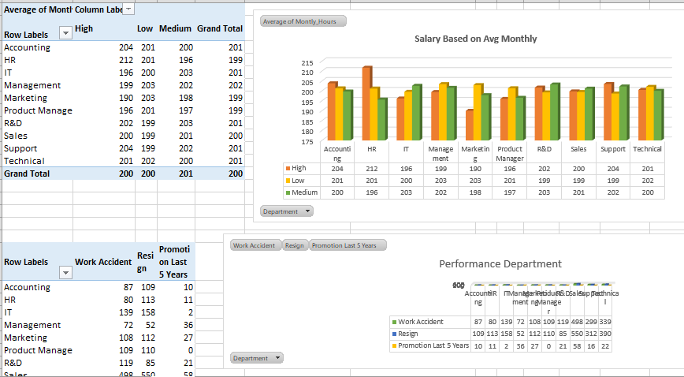

Analisis Kinerja Department di Perusahaan
Project ini bermula dari keinginan saya dalam menguasai tools yang ada di excel lebih dalam khususnya yang berkaitan dengan data analyst melalui pembelajaran youtube Alex The Analyst. Saya menggunakan HR Data Analyst dari Capstone Project Talenthub Kementerian Ketenagakerjaan. Tahap 1 dilakukan cleaning data. Saya menghapus data duplikat yang ada di dataset. Kemudian merapikan dan mengecek setiap kolom apakah ada format yang tidak sesuai.
Setelah data cleaning dilakukan, tahap selanjutnya adalah membuat pivot table. Dalam pivot table, saya membuat menjadi 4 tabel. Tabel 1 berisi salary, department, dan rata-rata jam kerja dalam sebulan. Tabel ini saya khususkan untuk melihat gaji dan jam kerja yang dihabiskan oleh karyawan di tiap divisi. Tabel 2 berisi department, jumlah work accident, resign, dan promosi pegawai 5 tahun terakhir. Tabel 3 berisi berisi department dan jumlah level kepuasan pegawai.
Tabel 4 berisi department dan jumlah waktu yang dihabiskan di perusahaan. Setelah semua tabel dibuat, tahap terakhir adalah membuat dashboard. Dashboard dibuat semenarik mungkin agar dapat membuat pembaca tertarik untuk membacanya. Dashboard dapat menampilkan data setiap department dengan mengklik tombol department.